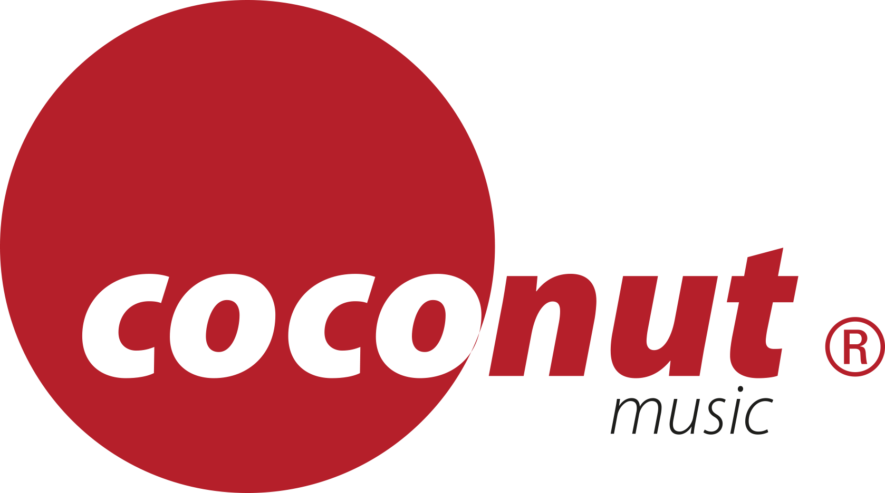

홈 > 브랜드 매거진 > Coconut Records
Coconut Records
코코넛 레코드(Coconut Records)는 1981년 토니 헨드릭과 카린 하르트만이 독일에서 설립한 음반 레이블이다. 유로댄스·팝을 다루며 해더웨이·배드 보이스 블루 등을 배출했다.
산업 분야 미디어·엔터테인먼트 · 공개 등급 디렉토리 · 브랜드 평가 3.2 ★

한눈에 보는 브랜드
코코넛 레코드(Coconut Records)는 1981년 토니 헨드릭과 카린 하르트만이 독일에서 설립한 음반 레이블이다. 유로댄스·팝을 다루며 해더웨이·배드 보이스 블루 등을 배출했다.
브랜드 관점
코코넛 레코드는 해더웨이·배드 보이스 블루를 배출한 독일의 유로댄스·팝 레이블이다. 설립·운영 주체, 주력 장르, 대표 아티스트를 함께 보면 미디어·엔터테인먼트 안에서의 위치가 또렷해진다.
시작과 성장
1981년 토니 헨드릭과 카린 하르트만이 독일 헤네프에서 설립했다. 유로댄스·팝을 다루며 해더웨이의 'What Is Love' 등 히트를 냈고, 2024년 카탈로그가 BMG에 인수됐다.
브랜드 아이덴티티
Coconut Records의 아이덴티티는 브랜드명, 로고 사용 여부, 업종 언어, 국가적 배경을 중심으로 정리됩니다. 공개 로고 자산은 추후 권리 확인 후 보강할 수 있도록 텍스트 메타데이터 중심으로 관리합니다.
확장 지식
독일 헤네프 기반의 유로댄스·팝 레이블로 해더웨이 등을 배출했고 2024년 카탈로그가 BMG에 인수됐다.
제품과 서비스
유로댄스·팝 음반을 발매했다. 해더웨이 'What Is Love', 배드 보이스 블루 등이 대표적이다.
사람들
토니 헨드릭과 카린 하르트만이 1981년 설립했다.
현재 상태
타임라인
정리된 연도형 이벤트가 없습니다.
BI/CI 변천사
함께 읽을 브랜드
 미디어·엔터테인먼트 · 디렉토리자이브 레코드
미디어·엔터테인먼트 · 디렉토리자이브 레코드자이브 레코드(Jive Records)는 1981년 클라이브 칼더가 좀바 그룹 산하로 세운 음반 레이블이다. 브리트니 스피어스·백스트리트 보이스 등을 배출한 팝·힙합...
 미디어·엔터테인먼트 · 디렉토리J 레코드
미디어·엔터테인먼트 · 디렉토리J 레코드J 레코드(J Records)는 2000년 클라이브 데이비스가 미국에서 설립한 음반 레이블이다. 얼리샤 키스 등을 배출한 R&B·팝 레이블로, 2011년 RCA로 통...
Lo
Loud Records
미디어·엔터테인먼트 · 디렉토리Loud Records라우드 레코드(Loud Records)는 1991년 스티브 리프킨드 등이 미국 뉴욕에서 설립한 힙합 레이블이다. 우탱 클랜을 배출한 1990년대 힙합의 핵심 레이블로...
 미디어·엔터테인먼트 · 디렉토리사이어 레코드
미디어·엔터테인먼트 · 디렉토리사이어 레코드사이어 레코드(Sire Records)는 1966년 시모어 스타인과 리처드 고터러가 미국 뉴욕에서 설립한 음반 레이블이다. 라몬즈·토킹 헤즈·마돈나를 배출한 뉴웨이브...
Am
Amphetamine Reptile Records
미디어·엔터테인먼트 · 디렉토리Amphetamine Reptile Records암페타민 렙타일 레코드(Amphetamine Reptile Records)는 1986년 톰 헤이즐마이어가 미국에서 설립한 노이즈록 레이블이다. 헬멧·멜빈스 등을 배출...
미디어·엔터테인먼트 · 디렉토리Factory Records팩토리 레코드(Factory Records)는 1978년 토니 윌슨과 앨런 이래즈머스가 영국 맨체스터에서 설립한 음반 레이블이다. 조이 디비전·뉴 오더를 배출한 포스...
Sp
Specialty
미디어·엔터테인먼트 · 디렉토리Specialty스페셜티 레코드(Specialty Records)는 아트 루프가 1940년대 미국 로스앤젤레스에서 설립한 R&B·가스펠 레이블이다. 리틀 리처드를 배출한 초기 로큰롤...
미디어·엔터테인먼트 · 디렉토리ZTT RecordsZTT 레코드(ZTT Records)는 1983년 트레버 혼·질 싱클레어·폴 몰리가 영국 런던에서 설립한 음반 레이블이다. 프랭키 고즈 투 할리우드를 배출한 신스팝·...